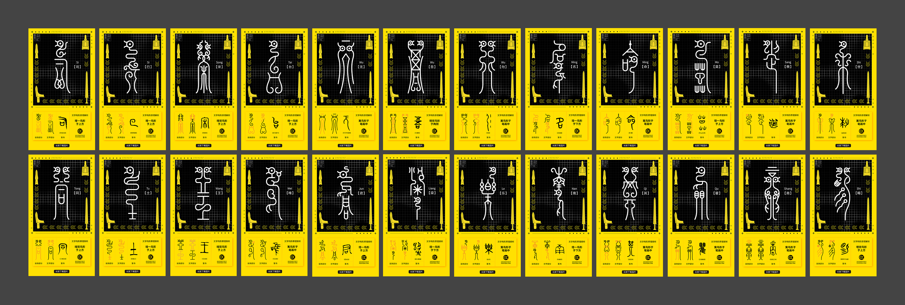

I was responsible for the information architecture, interface design, and front-end development of the H5 platform. The web app includes a homepage, an introduction to the script’s history and evolution, research findings, an interactive online exhibition, and six cultural creation modules inspired by the script. It also features a character search engine, allowing users to input standard Chinese characters and view their corresponding Bird and Insect script forms. Each section contains various subtopics, offering a layered and intuitive user journey.

The font system was based on documented, readable Bird and Insect characters, with inspiration primarily drawn from Yue State inscriptions. The design ensures structural consistency and visual unity across all decorative variants.
